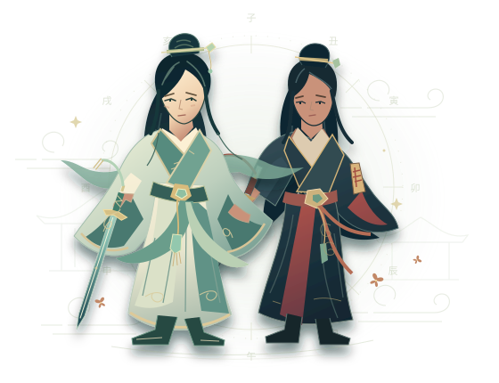

一剑巡天阙，一念渡幽冥。
化身巡界使，往来天庭与地府。寻回灵印，逐一挑战十二生肖元辰。

云海有归处，冥川亦有岸。歇息片刻，再赴两界。
重新出发将重置本次关卡进度。
天庭与地府各有通途，御剑与镇魂各有所长。
跳得更准 轻点低跳，按住高跳；落地前稍早按下也能接上下一跳。
留意灵力 在天庭御剑、于地府镇魂可恢复灵力，交错施术则持续消耗。
放心探索 引魂灯可记录落脚处并恢复资源。集齐灵印，前往界门挑战当值元辰。
横屏体验更开阔 · 支持键盘与触控
点选元辰后开启该章；关闭选择可返回，当前历练进度保留。